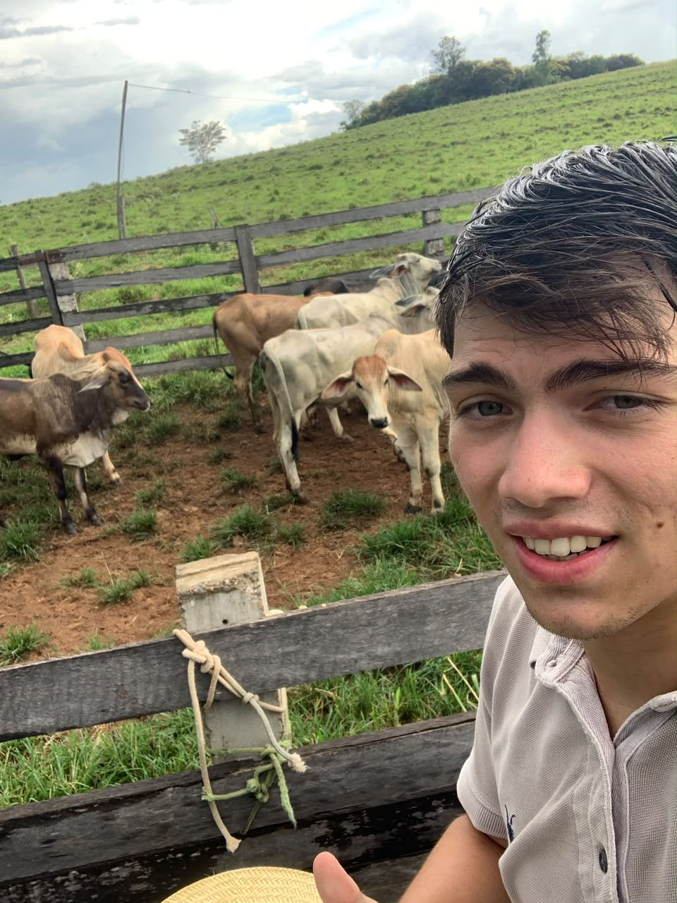

Olá, sou o
Estudante de Sistemas de Informação - FIPP.

Meu nome é João Pedro. Estudo Sistemas de Informação na FIPP, trabalho como auxiliar administrativo na Mecânica Implemaq e tenho a namorada mais linda do mundo.
Atualmente estou estudando programação e desenvolvendo meus conhecimentos em HTML, CSS e linguagem C.
| Formação | Conhecimento | Status |
|---|---|---|
| Ensino Médio | Formação escolar | Concluído |
| Ensino Superior | Sistemas de Informação | Estudando |
Você pode conhecer mais sobre mim através do meu link: